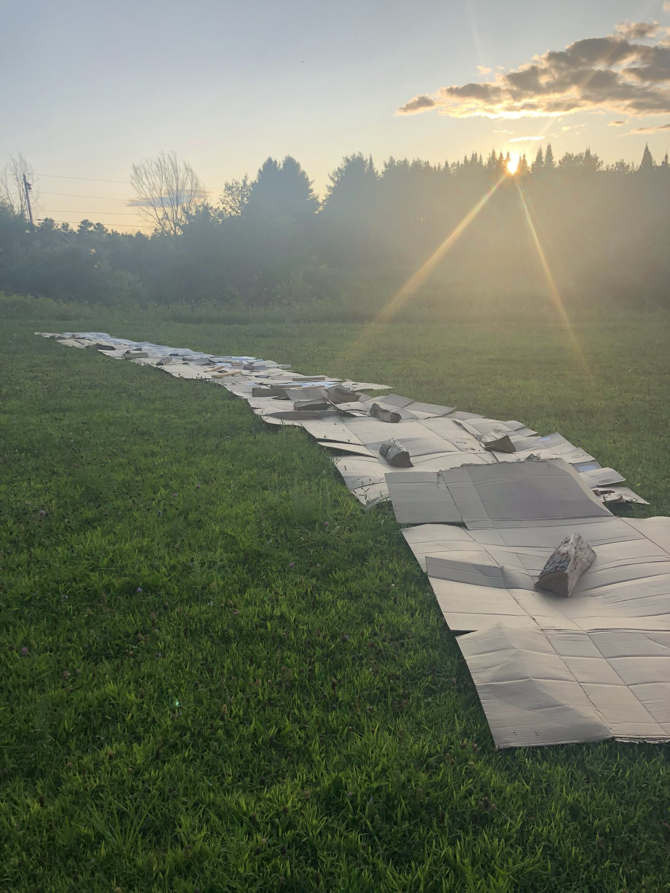
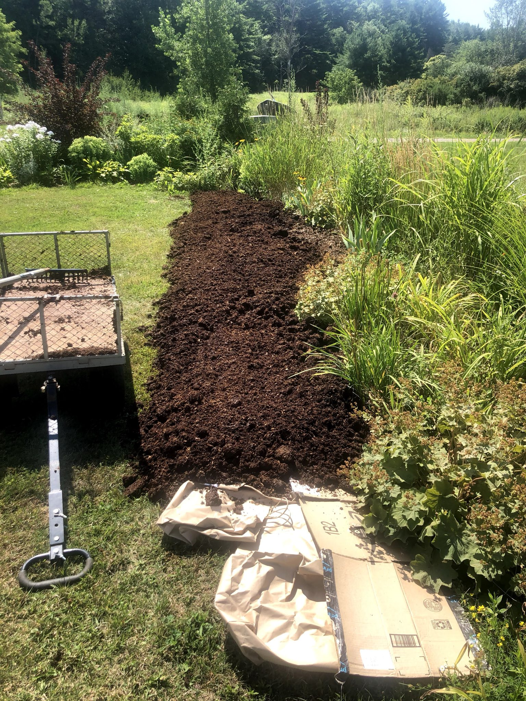
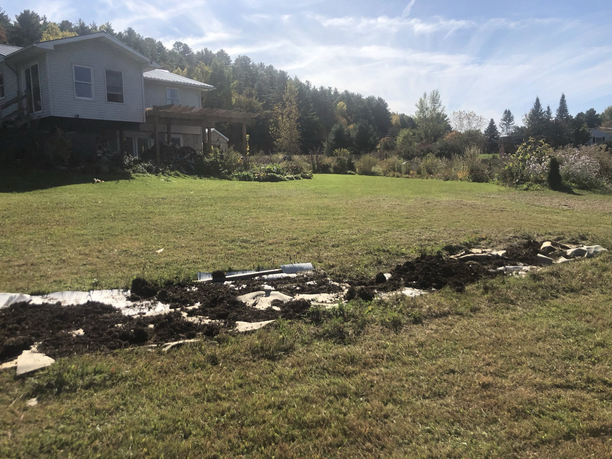
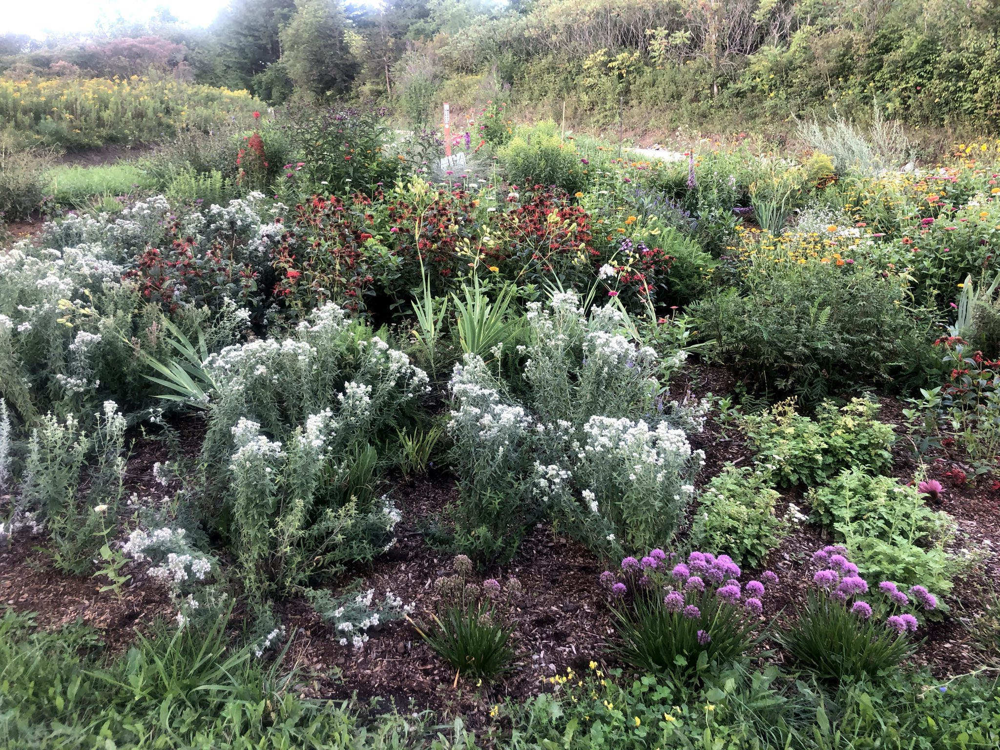
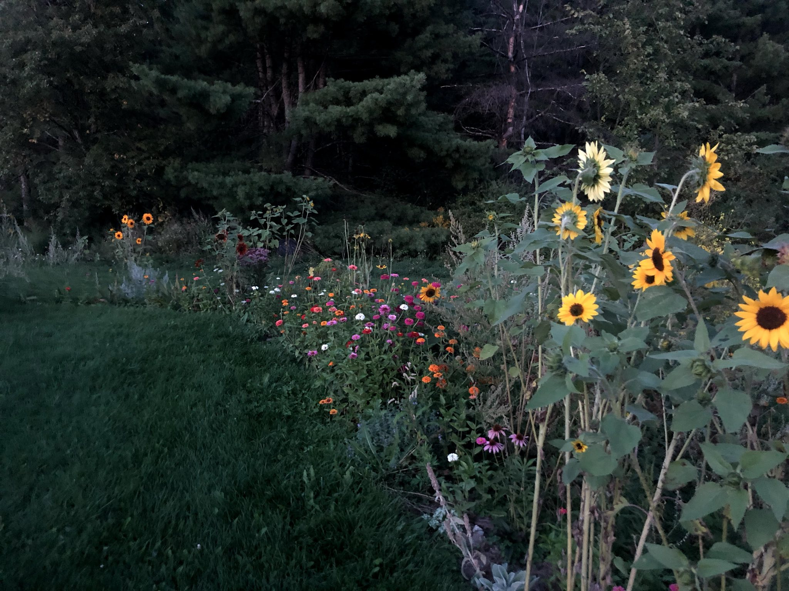
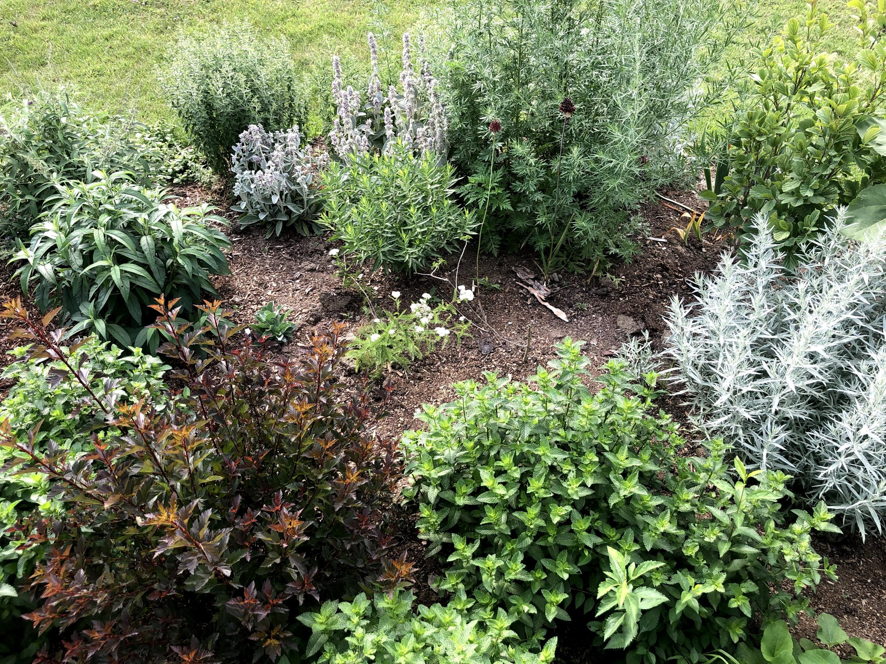
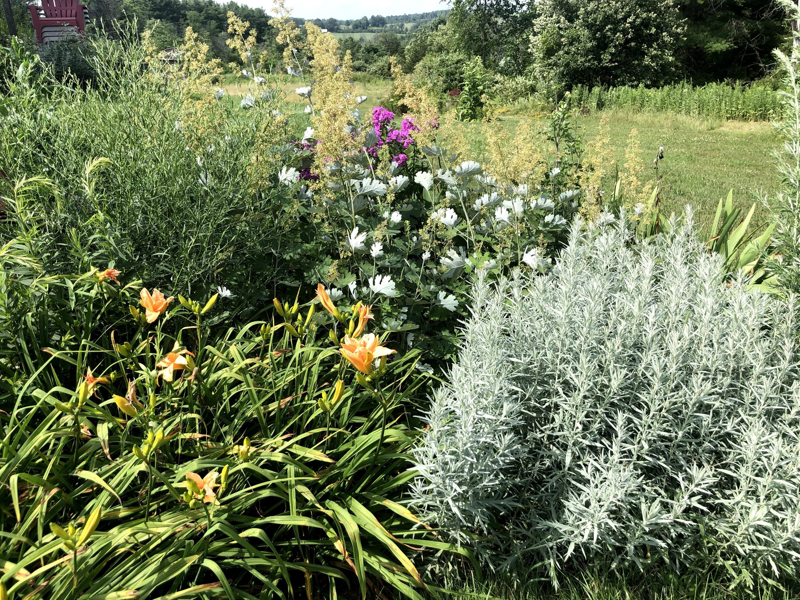
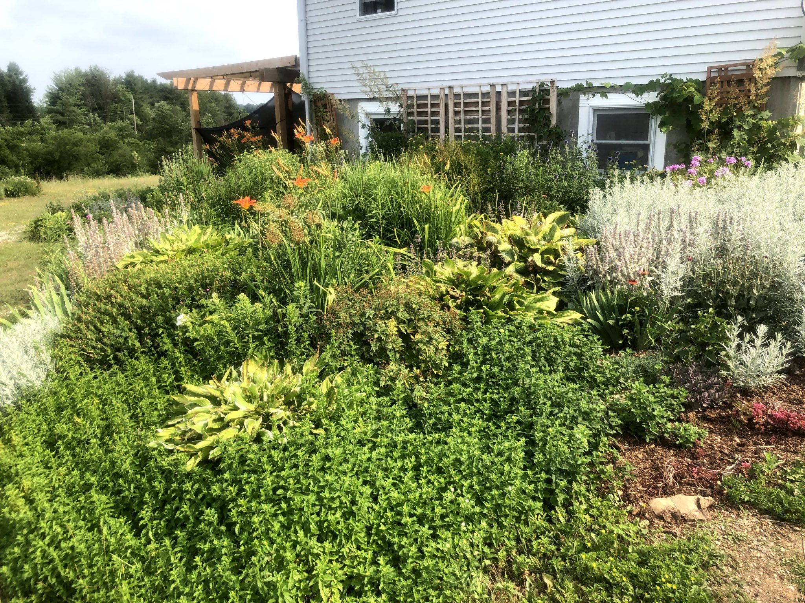
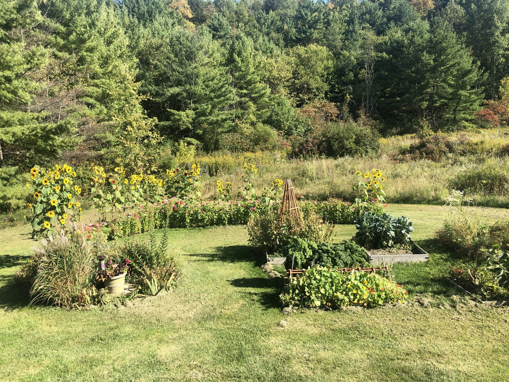
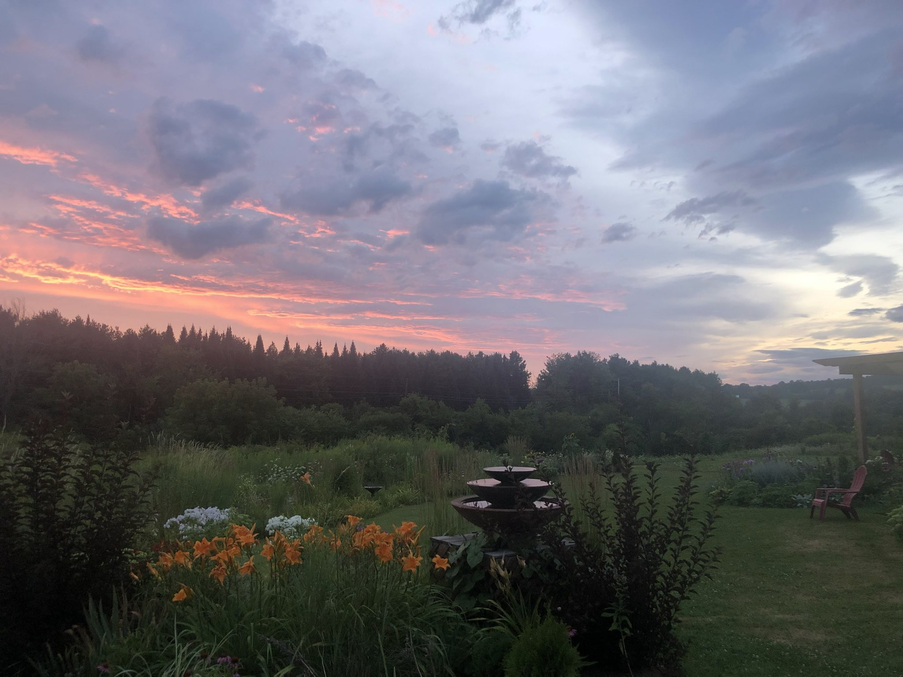

February 2021 · Part 3
Smothering Grass to Make Pollinator Gardens (Part 3)

I have twelve wonderful acres, ten of which is relatively pristine forest and two that I’m converting from grass to wildflowers fields and perennials gardens. This whole process of transforming grass into prolific perennials beds hasn’t been easy. I have spent long days in varied weather conditions moving composted manure by hand (e.g. shovel manure into cart, pull cart, dump cart, repeat.) Many days have felt like groundhog day. I don’t regret one day I’ve spent making these gardens for pollinators and I have learned so much.
I put gardens together with the help of my forgiving and understanding husband, friends with horses, luck, and a little research from UVM professor, Leonard Perry. Here is a direct link to an article that helped me understand my heavy clay soil. I did take any and all advice a step beyond adding nearly six inches of composted manure. Your soil may not be heavy clay and may not require the same amount of time and effort mine did to kill off grass. However, two things are certain: To kill grass without removing it you need to cover it and to amend soil you likely need to add some kind of organic matter and nutrients. So if you are building garden beds on top of grass or are curious about the madness that ensued read on:
Here’s a few steps and accompanying images of how to put together a pollinator garden quickly:
1) Save those cardboard boxes: Delivery boxes, pizza boxes, newspapers, paper bags from the grocery store and so on.
If you don’t have enough on your own, ask your local school, childcare center, grocery store, liquor store, or corner store they will have them— just ask! They are free and they need to get rid of them!

2) Remove tape, staples, and other non-paper attachments.
3) Layer the cardboard boxes in the desired garden location, leave no grass behind (you will regret it!) You may need to weigh them down with rocks, sticks, bricks, or something heavy to prevent the cardboard from blowing away or moving.
Looking at the image here you’ll see that I’ve got a pile of thick cardboard that I’m laying and placing rocks on top. It was a bit windy on this day and I’ve layered cardboard, piled up compost and repeated the process. I tried to ensure that I’m layering new soil on top of the cardboard so I need to lay it out so that I can add cardboard on top of cardboard and not on top of new soil.
4) Get compost, composted manure from a trusted farmer, or a garden soil delivery. You might need to move this from one location to another, depending on your site. It’s helpful to have a tractor, garden cart, or a strong back. I keep a garden rake and a shovel with me where I’m spreading my soil. If it needs to sit for awhile and your keeping it “out of the way” keep in mind you have to move it from that site.

5) Pile it on! Cover that cardboard with as much compost/soil as possible. I make piles and then spread it out with a garden rake. If you are planting sooner than later (that day or that same month) try to cover that cardboard thoroughly. I have added as much as 10 inches of compost and as little as 2 inches. I have found the most success leaving a prepped site to sit for the winter or letting it sit for a few seasons (e.g. preparing in the spring, letting it sit for the summer, and then planting in the fall.) The cardboard seems to break down enough to kill off the grass and if you’ve amended with organic material and nutrients (e.g. compost) the space is happy to accept plants and seeds.
6) Let the planting begin! If you are planting plants with root systems, dig a hole that breaks through the cardboard/newspaper, if applicable, so the roots have room to grow. I have made the mistake of not planting beyond the cardboard layer, the roots don’t seem to go anywhere and it seems to dry out pretty easy when the weather gets hot.
7) Water your garden and watch it grow! Here are a few images of the gardens I’ve constructed doing exactly what I laid out in this post…







Filed in the garden journal · February 2021 · Part 3